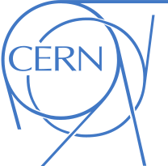
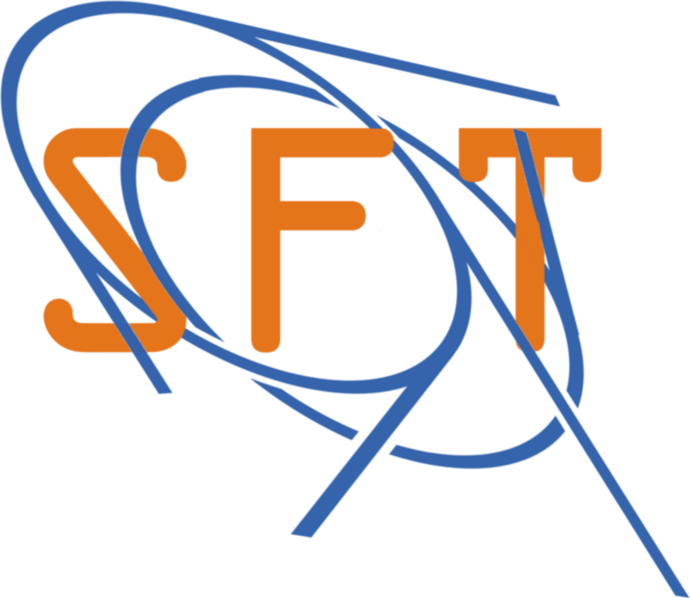
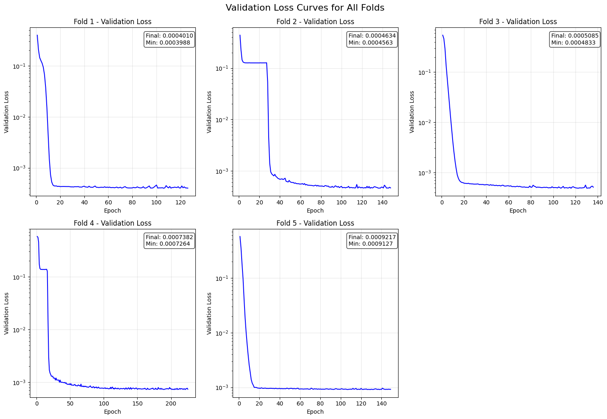
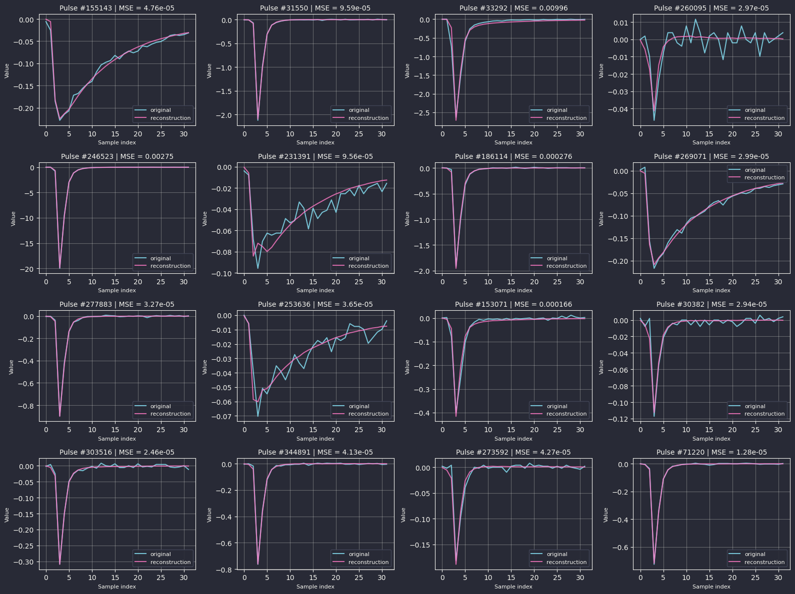

PicoCal Autoencoder
Ali Javani
2025-03-09
PicoCal Autoencoder Optimization
Presenter: Ali Javani
Supervisers: Dr. Vladimir Loncar • Prof. Eluned Smith
Co-Supervisors: Dr. Julian Garcia Pardinas • Dr. Katya Govorkova


Project overview
The model compresses and reconstructs the pulses measured in the PicoCal [1] calorimeter. Each pulse is normally stored as 32 samples (already downsampled from a longer waveform). Transmitting and saving all of this is challenging because the detector will record millions of pulses per second.
Our autoencoder takes each 32-point pulse and compresses it to a 2-dimensional latent. These two numbers capture key features (size, shape, timing). The encoder runs on-detector so only the compressed representation is transmitted; the decoder reconstructs the full 32-sample pulse downstream.
Compared with simpler methods that keep only a timestamp, this preserves much more information about the pulse shape, improving:
- Time reconstruction: precise hit timing.
- Energy calibration: mapping the wave amplitude to deposited energy.
- Pile-up mitigation: separating overlapping signals.
What is an Autoencoder?
An autoencoder learns a compact representation (encoder) and a reconstruction (decoder).
Our baseline: 32 → 2 → 32 (encoder → bottleneck → decoder). The encoder is the on-detector component; the decoder is offline.
So, the bottleneck would retain most of the information
Data used for training
Training and testing data come from a detailed simulation of the PicoCal electromagnetic calorimeter, including the detector geometry, materials, and readout electronics, so simulated pulses resemble those expected during LHCb data-taking.
We generate two pulse types and then mix them to mimic realistic running conditions:
- Signal pulses: single photons, 0.5–5 GeV, produced near the interaction point.
- Background pulses: extra detector activity (for example: pile-up, underlying event).
Each pulse is first simulated with 1024 samples (as in the actual test-beam digitizer). The detector will use a different digitizer with 32 samples, so we downsample 1024→32 to match. This preserves overall shape but not exact timing.
Current status (work done so far)
- A baseline autoencoder is trained.
- An hls4ml implementation exists for hardware deployment of the encoder.
What I am going to do
Optimize the model via quantization, focusing on the encoder.
What has been changed about my project
Our planned radiation hardening study (separate project) has been postponed because:
- Uncertainty: The specific effects of radiation on the hardware are still under investigation, so we lack a clear fault model to design for.
- Current Efficiency: Our hardware implementation is so resource-efficient that traditional Triple Modular Redundancy (TMR) is now a simple and viable solution, making a complex study less urgent.
➡️ Therefore, our focus has shifted toward the model quantization project.
Why we should quantize?
- Smaller & cheaper: fewer bits → less bandwidth per pulse.
- Faster & lower latency: fixed-point arithmetic is hardware-friendly.
- Lower power: critical for on-detector operation.
- Smaller output payload: compressed latent space uses fewer bits per value.
- All previous benefits are free: with QAT 1, We can recover most or all of the accuracy lost to quantization.
| Option | Definition | Pros | Costs / Trade-offs | Typical use |
|---|---|---|---|---|
| Homogeneous | One bit-width for all weights & activations across the model (e.g., all INT8). | Simple, fast to deploy; widely supported; easy to calibrate. | May leave accuracy on the table; no layer-specific tuning. | First pass; production baselines; strict simplicity/latency targets. |
| Mixed-precision (layer/group-wise) | Choose bit-width per layer or per group of layers (e.g., encoder vs. decoder; early/mid/late blocks). |
Strong accuracy–resource trade with modest complexity; aligns with runtime support. |
Requires profiling/tuning; slightly more complex conversion. |
FPGAs/ASICs (e.g., QKeras+hls4ml); mobile/edge where certain layers bottleneck. |
| Mixed-precision (per-weight-wise) | Bit-width varies within a layer (per channel/filter or even per individual weight). |
Finest control; can hit tight resource/accuracy targets; great for LUT/DSP packing. |
High implementation complexity; limited framework/kernel support; harder verification. |
Hardware compilation flows (FPGA/ASIC)—like those commonly used at CERN for on-detector/trigger systems; bit-serial or weight-streaming architectures; research/ASIC prototyping. |
| Approach | What it does | Accuracy impact | Speed/Memory win | Typical use |
|---|---|---|---|---|
| PTQ (static) | Calibrate once; bake fixed activation scales/zero-points. | Low→moderate (strong at INT8; riskier ≤4-bit) | 3–4× smaller; fast INT kernels | Quick deploy w/ small calibration set. |
| PTQ (dynamic) | Weights quantized; activation scales computed at inference. | Similar to static at INT8; worse ≤4-bit | Memory win; modest speedup | CPU/NLP, no calibration set. |
| QAT | Train with fake-quant so model learns quant noise. | Best (often matches FP at INT8; workable ≤4-bit with care) | Same runtime as PTQ; extra training cost | Edge/FPGA/ASIC; tight accuracy. |
| WOQ | Quantize weights only (e.g., 4-bit); activations FP8/FP16. | Small→moderate | Big memory/BW savings | Large LLM/CV on GPUs. |
Quantization Strategy: Mixed-precision QAT
- Why QAT?
- Small model → can retrain multiple times
- Avoids accuracy loss from post-training quantization
- Granularity Choice
- Few parameters → finer granularity is better
- Ideal: Weight-wise mixed-precision (HGQ2 - High Granularity Quantization 2)
- Current: Layer-wise quantization (QKeras)
- Implementation
- Now: QKeras + hls4ml (layer-wise)
- Stable support for Microchip radiation-hardened FPGA
- Future: Migrate to HGQ2 (weight-wise)
- Microchip FPGA support recently added but not production-ready
- Now: QKeras + hls4ml (layer-wise)
QKeras [2] + hls4ml [3] + (AutoQKeras [4])
QKeras is a drop-in extension of Keras that lets you assign per-layer (heterogeneous) quantization to weights, activations, and batch-norm parameters and train the model quantization-aware. Combined with hls4ml, quantized networks are compiled to FPGA firmware for O(10) ns inference.
AutoQKeras: Auto search over bit-widths based on estimated energy or model bit size + accuracy.
Why I’m not using AutoQKeras
AutoQKeras (auto search over bit-widths based on estimated energy or model bit size + accuracy) was not used due to:
- Sparse docs/API; heavy implicit behavior.
- Minimal result summaries and limited reliability for our workflow.
- No built-in K-Fold support;
- Limited parallelism beyond default Keras options (except Trial parallelism, Data parallelism only suitable for multiple GPUs)
Environment constraints (what currently works)
- QKeras works reliably with
Python 3.10+TensorFlow 2.14+Keras 2.xin our tests. - Keras v3 APIs are not compatible (errors encountered). There are signs of in-progress support, but it is not usable in our setup yet and updates are so rare.
- CUDA/driver combinations: in practice, the project failed with some versions (e.g., ~560, ~580) and ran with an intermediate one (~570) but again, in theory it should be compatible with 570 ≤.
- Although some guides suggest
TF 2.15(Keras 2.15) orTF ≥ 2.16withtf-kerasandTF_USE_LEGACY_KERAS=1, this did not work in our experiments. We therefore stuck toPython 3.10+TF 2.14.
Note: I plan to create a short notebook/markdown guide for a reproducible QKeras setup (including CERN cluster tips), given the current documentation gaps and the fact that it took a lot of time on setting up a working environment for me.
Quantization work so far
Wrong baseline comparison (fixed)
Initially, the quantized model was asked to reconstruct unquantized labes from it’s quantized inputs; this implicitly asks it to reverse quantization function too.
quant_size = 8, int_size = 3
input_layer = layers.Input(shape=(32,), name="input_layer")
quantized_input = QActivation(f'quantized_bits(10,3,0,alpha=1)')(input_layer)
encoded_output = QDense(
2,
kernel_quantizer=f'quantized_bits({quant_size},{int_size},1,alpha=1)',
bias_quantizer=f'quantized_bits({quant_size},{int_size},1,alpha=1)',
name="encoded"
)(input_layer)
encoded_output = QActivation(
f'quantized_relu({quant_size},{int_size},0)',
name="encoded_act"
)(encoded_output)Fix: Quantize the inputs (data) prior to training so both models see consistent quantization.
“dying ReLU” diagnosis (fixed)
Intermittent failures (~1/3 runs).
Even after fixing the inputs, about one-third of runs failed to learn. Inspection of weights and biases showed nothing obviously wrong, yet parameter updates were tiny or stagnant across batches/epochs. Probing intermediate layer outputs revealed the network was producing near-constant outputs, and, crucially, the encoder ReLU had a very high (sometimes ~100%) probability of outputting zero on one or both latent units.
Root cause: ReLU + tiny bottleneck → dead units.
With an activation that has an asymmetric output (ReLU = zero for all negative pre-activations) and a bottleneck with very few neurons (latent=2), the model often explores zero outputs early—before the optimizer is “calibrated.” Once a ReLU unit is stuck at zero, its gradient is zero and it cannot recover. This is the dying ReLU problem: ReLU neurons become permanently inactive, outputting zero for all inputs and blocking learning.
Mitigations explored (and what actually worked).
- Initialization: Use He (Kaiming) initialization instead of Xavier for rectifiers. [5]
- Normalization: Some papers suggest placing Batch Normalization immediately before the activation (notably in larger models) to stabilize pre-activations. [6]
- Activation variants: Many works propose ReLU extensions (e.g., Leaky ReLU / PReLU / RReLU) that keep a non-zero slope on the negative side, both mitigating dead units and sometimes improving accuracy.
- Regularization for quantization robustness: One paper recommends L2 regularization in quantization-friendly designs for large models—shrinking weight ranges to reduce quantization error, which in turn lowers the chance of saturating activations and killing neurons: [7]
- Learning rate: A large LR increases the chance of pushing units into the zero region. I tuned the LR, added warmup, and experimented with restarts; these helped but did not fully resolve the issue.
Outcome.
The only change that consistently fixed the problem was replacing ReLU with Leaky ReLU in the encoder bottleneck. Other mitigations (He init, BN placement, L2, LR schedules) did not noticeably alleviate the issue in our small model, likely because many of those results are demonstrated on larger architectures.
Operational safeguard.
I also implemented a callback to detect dying behavior (monitoring zero-output ratio and learning stalls) and to reinitialize. However, reinitializing layers/activations/callbacks/epochs mid-training made the code overly complex. Instead, I adopted a simpler restart policy triggered by high validation loss, which works well in practice.
Baseline model (with relu activation) trained with reinitialization
Some models struggle to train initially due to the dying ReLU problem.
Variance across runs and K-Fold cross-validation
The std of the minimum validation loss was high (≈ half the mean). To obtain a more stable estimate:
- Used K-Fold CV (K=10) to report an average with variance.
- Sequential training became slow; tried multiprocessing with shared GPU but ran into errors.
- Switched to a clearer approach using
subprocess.Popento launch independent training processes, reschedule failures, and keep the parallelism logic outside the training code.
What to optimize next (and why)
- # encoder layers: adding encoder depth doubles on-detector latency; avoid unless justified.
- # decoder layers: can be increased (offline) to improve reconstruction and better expose the bottleneck capacity.
- Quantizing encoder weights/biases: evaluate experimentally (likely symmetric per-channel weights; higher-precision biases).
- Quantizing encoder output activation: evaluate carefully (see §13).
- Latent dimensionality: we tested 2→5 for insight; spec requires 2, so we will stick to 2.
Parameter ranges and early experiments
- Weights/biases: observed magnitudes are small; integer bits 0–2 seem sufficient. With 10–15 fractional bits, quantization error is well below the model’s validation loss per parameter.
This chart shows the average data loss per weight or bias when applying PTQ, with our baseline model accuracy at approximately 0.0006
- Activations Outputs: much wider dynamic range; they need more integer bits, making them harder to quantize aggressively.
- Quantizing only the encoder output activation gave inconsistent results (sensitive/random).
- Keeping that activation unquantized, we scanned latent sizes 2–5: moving from 2 → 3 latents improved accuracy by ~4× with ~1.5× model/energy cost, but spec confines us to 2 latents (post-review), and gains from 3→4→5 were not compelling.
Across runs, integer-bit = 0 (i.e., all fractional) often performed best for weights/biases, matching the observed small dynamic range.
Key observation: Although run-to-run variance is high, train and validation losses closely track, especially at the end. The decoder has ~2 KB of parameters vs. ~100 MB of data, so the model capacity is too small to overfit; low MSE loss typically reflects genuine difficulty, not overfitting.
6 Random Models (bits=4)
Implication for production: choose a reasonable configuration and rerun with new initializations until the desired metric is achieved. Under this regime, we can also quantize the encoder activation more aggressively.
Recommendations to the new QKeras replacing of CERN - HGQ2 (developer feedback)
- Add LeakyReLU-family activations support; they help both small and large models and drastically reduce dead-unit risk.
- Prefer explicit over implicit implementation behavior and make implicit functionalities like auto quantization one top of them.
- Move away from string-based quantizer specs; adopt Pythonic APIs (with deprecation warnings).
- Consider drop-in PyTorch-layer equivalents for broader adoption.
Final reconstructions from test data
Alt+click to zoom in on elements (CTRL+click in Linux)
Summary
- I worked on optimizing an autoencoder to compress pulses measured in the PicoCal calorimeter.
- I used mixed-precision quantization (QKeras + hls4ml) to quantize the encoder while maintaining accuracy.
- To avoid dead units, I used Leaky ReLU during development and a restart policy for the final product.
- To provide more meaningful results despite high variance, I used K-Fold training.
- I showed that accuracy can improve by up to 4× by adding one latent variable.
- I demonstrated that we can reduce the encoder size by at least 4× through quantization with no noticeable loss in accuracy, and potentially even more for the final product.
References
[1]
L. LHCb collaboration, “LHCb Upgrade II Scoping Document,” CERN, Geneva, 2024. doi: 10.17181/CERN.2RXP.HDK0.
[2]
C. N. Coelho et al., “Ultra low-latency, low-area inference accelerators using heterogeneous deep quantization with QKeras and hls4ml,” ArXiv, vol. abs/2006.10159, 2020, Available: https://api.semanticscholar.org/CorpusID:219792602
[3]
F. Fahim et al., “hls4ml: An open-source codesign workflow to empower scientific low-power machine learning devices.” 2021. Available: https://arxiv.org/abs/2103.05579
[4]
C. N. Coelho et al., “Automatic heterogeneous quantization of deep neural networks for low-latency inference on the edge for particle detectors,” Nature Machine Intelligence, vol. 3, no. 8, pp. 675–686, Jun. 2021, doi: 10.1038/s42256-021-00356-5.
[5]
K. He, X. Zhang, S. Ren, and J. Sun, “Delving deep into rectifiers: Surpassing human-level performance on ImageNet classification.” 2015. Available: https://arxiv.org/abs/1502.01852
[6]
S. Ioffe and C. Szegedy, “Batch normalization: Accelerating deep network training by reducing internal covariate shift,” CoRR, vol. abs/1502.03167, 2015, Available: http://arxiv.org/abs/1502.03167
[7]
T. Sheng, C. Feng, S. Zhuo, X. Zhang, L. Shen, and M. Aleksic, “A quantization-friendly separable convolution for MobileNets,” in 2018 1st workshop on energy efficient machine learning and cognitive computing for embedded applications (EMC2), IEEE, Mar. 2018. doi: 10.1109/emc2.2018.00011.
Send Regards
This was my first time in Europe, and I absolutely loved the experience. My time at CERN was truly exceptional—the collaborative environment and welcoming atmosphere made it unforgettable.
I’m deeply grateful to everyone who makes this summer program possible. The impact you’re creating by providing these opportunities to students is remarkable, and I feel fortunate to have been part of it.

Ali Javani - Summer Student 2025 - PicoCal Autoencoder Optimization - 03.09.2025